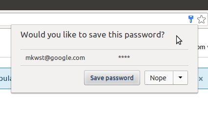

Credential Management: Use Cases and Requirements
Status: DREAM
ED: https://mikewest.github.io/credentialmanagement/usecases/
Shortname: CREDENTIAL
Level: 1
Editor: Mike West, Google Inc., mkwst@google.com
Abstract: Signing into websites is more difficult than it ought to be; user agents address this by providing password managment functionality. It works pretty well, but could work even better (and more consistently) by involving the websites more deeply in the process of requesting and storing credentials.
Abstract: This document outlines the use cases that would motivate such an API, examines the similar APIs available to native applications, and sketches a set of requirements which would drive specification of such an API.
Group: personal
Version History: https://github.com/mikewest/credentialmanagement/commits/master/usecases/index.src.html
Status Quo
When using an application (native or web), users often choose to authenticate
themselves in some way the application can verify in order to obtain access to
information and services. This process may involve handing over some set of
credentials which the application can directly verify (a username and password,
for example), or the application may rely on a third-party identity provider to
authenticate the user on their behalf.
User agents attempt to make this process as smooth and secure as possible for
users by offering password management capabilities. These differ in ancillary
functionality, but at their core, they all store username/password pairs, and
tie them to a particular origin.

Stored username/password pairs are then filled into sign in forms on that origin
when the user agent detects them via vendor-specific heuristics. Filling
behavior differs between user agents; some fill sign in forms automatically,
without user interaction, others require the user to actively choose to fill a
form.
 Websites have very little insight into or control over these behaviors. This is
partially intentional: user agents don't want websites to prevent users from
storing credentials. Still, this lack of interaction means that user agents'
password managers can't be as effective as they could be. The whole system is
based on heuristics to detect sign-in forms, and to detect when users have
successfully signed in using such a form.
Websites have very little insight into or control over these behaviors. This is
partially intentional: user agents don't want websites to prevent users from
storing credentials. Still, this lack of interaction means that user agents'
password managers can't be as effective as they could be. The whole system is
based on heuristics to detect sign-in forms, and to detect when users have
successfully signed in using such a form.
autocomplete Attributes
Sign in forms' markup is, practically, the only way which websites can currently
influence user agent's credential management behavior. Adding specific
autocomplete attributes [[HTML5]]
can identify individual form fields as "username" or "current-password" for sign
in forms, or as "username" and "current-password"/"new-password" for password
change forms. It is significantly simpler for user agents to correctly parse
forms when these attributes are present, and browser vendors strongly suggest
that authors use them when constructing forms.
Signing In
Username/password
Users are generally familiar with sign-in forms. They ask for a username and
password, and are either present directly on an application's landing page, or
are one or so clicks away behind a "Sign in!" button.
Users may, of course, type in a username and password. That requires them to
remember a username and password, which in turn requires the password
to be easy to remember. This encouages users to choose simple passwords, and to
reuse them across sites.
Credential managers remove some of that burden (and make signing into websites
from mobile devices significantly easier, as typing complex passwords is
difficult enough on a "real" keyboard; thumbs make it nearly impossible to get
things right on the first try), and can enable significant security improvements
such as password generation.
Native applications generally have access to some sort of "keychain" API to
store and retrieve these sorts of credentials in order to ensure that users only
have to type in their credentials once. Apple has documented workflows for
iOS Keychain Services
and
OS X Keychain Services.
The concepts are the same on Windows and Android, but there's no platform-level
equivalant on the web.
Interestingly, iOS8 introduces a new method which enables native applications
to reach into Safari's credential store to request a website's credentials and
apply them to an app: SecRequestSharedWebCredential. Calling this
method will pop up a picker which allows users to grant the application access
to a specific set of credentials:

Changing Passwords
TODO
Forgotten Password
TODO
Federated Identity Provider
If a user has signed into a website via a third-party identity provider, she's
more or less on her own: user agents don't currently support federations well,
if at all. The website will present a list of supported federations for a user
to choose from:
 The user will choose one, and then go through a provider-specific sign-in flow.
The user agent's credential manager can help with this bit (it might autofill
the provider's sign-in form), but no credential manager I tested (Chrome,
Firefox, IE, Opera) has the ability to remind a user that she used Facebook to
sign into this site, and Twitter to sign into that site. She's on her own, and
is quite likely to end up with multiple accounts somewhere because of this
confusion.
Again, native applications will use the platform-level keychain APIs in order
to store this information themselves, and may also store authentication tokens
provided by the identity provider (e.g. OAuth 2.0's "refresh tokens"
[[!RFC6749]]). Apps are generally on their own for the authentication dance with
the provider, however: each will provide its own SDK (e.g.
Facebook SDK for Android,
or Google+ Sign-In for iOS).
Sign-in is therefore a two-step process: the application must first retrieve the
federation the user used to sign in, and then go talk to that federation.
The new iOS8 methods don't seem to attempt to provide this functionality: apps
are on their own.
The user will choose one, and then go through a provider-specific sign-in flow.
The user agent's credential manager can help with this bit (it might autofill
the provider's sign-in form), but no credential manager I tested (Chrome,
Firefox, IE, Opera) has the ability to remind a user that she used Facebook to
sign into this site, and Twitter to sign into that site. She's on her own, and
is quite likely to end up with multiple accounts somewhere because of this
confusion.
Again, native applications will use the platform-level keychain APIs in order
to store this information themselves, and may also store authentication tokens
provided by the identity provider (e.g. OAuth 2.0's "refresh tokens"
[[!RFC6749]]). Apps are generally on their own for the authentication dance with
the provider, however: each will provide its own SDK (e.g.
Facebook SDK for Android,
or Google+ Sign-In for iOS).
Sign-in is therefore a two-step process: the application must first retrieve the
federation the user used to sign in, and then go talk to that federation.
The new iOS8 methods don't seem to attempt to provide this functionality: apps
are on their own.
Signing Up
Username/password
Signing up is quite similar to signing in
Again, iOS8 has introduced a new method allowing native applications to store
credentials for associated websites: SecAddSharedWebCredential.
This doesn't appear to prompt users to save the new credential, but it does
prompt when updating:

Federated Identity Provider
Requirements
A standardized API to address these use cases:
-
MUST support credentials in the form of traditional username/password
pairs (e.g. "mikewest"/"pencil") and in the form of
federated username/federated identity provider pairs (e.g.
"mkwst@google.com"/"https://accounts.firefox.com").
-
MUST provide an imperative mechanism for a website to request credentials.
-
MUST provide an imperative mechanism for a website to suggest that a set of
credentials be stored (e.g. "The user successfully signed in with this
username/password pair." or "The user signed in using Firefox Accounts").
-
MUST provide an imperative mechanism for a website to suggest that a set of
credentials be removed (e.g. "This username/password pair failed; perhaps
the user changed her password?").
-
MUST NOT provide credentials to a website without obtaining the user's
permission. For user convinience, this MAY take the form of a persistent
permission grant.
-
SHOULD provide an imperative mechanism for notifying the user agent that the
user has signed out (which would enable the user agent to clear a persistent
credential permission grant, for example).
-
SHOULD respond to a user clearing an origin's cookies by also clearing any
persistent credential permission granted to that origin.
-
SHOULD do whatever possible to ease the burden of the authentication dances
each provider requires. If the user agent knows that a provider speaks a
specific dialect of OAuth 2.0, for instance, perhaps it can provide a
generic API which would lead the user through the flow, and return an
access or refresh token to the application directly.